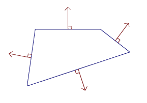
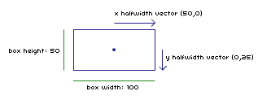
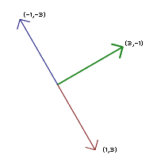

|
N Tutorial A – Collision Detection and Response
SECTION 0: General Introduction
|
|
SECTION 0: General Introduction –= Collision Detection in Games =– Typically, collision detection in games is carried out into two steps:
(2) determine collision results for each pair identified in step (1) (narrow phase) In N, step (1) is implemented using a uniform “loose” grid of square cells; each shape is stored in the cell which contains its center, and each shape is collided against any shapes in its current cell, or the 8 cells touching the current cell. Later tutorials will explain this system in greater detail; this tutorial will explain how step (2) was implemented in N. The algorithms we used to handle this step are of use to any game which requires fast collision detection that provides more than a simple boolean result. –= Collision Response via Projection =– Before thinking about how to detect collisions, we should first think about what should happen to two objects which collide. Given only the fact that objects a and b overlap each other, a simple response would be to destroy one or both objects, or move one or both back to their previous positions. While this might be sufficient for some types of objects, we’d also like physically simulated objects which behave in a more realistic manner. In order to support this feature, we’ll need more information than simply “a and b are overlapping”. Specifically, information about the nature of the overlap is needed. Projection [Jakobsen] is one physically-plausible method for dealing with overlapping (“penetrating”) objects. The basic idea is to move the objects out of penetration using the smallest possible displacement. Solving the collision then becomes equivalent to finding the vector v which moves the two objects out of penetration by the shortest distance possible. Some other ways to deal with collision are using penalty-force or impulse-based methods. Penalty methods use spring forces to pull objects out of collision. Impulse-based methods use instantaneous impulses (changes in velocity) to prevent objects from interpenetrating. Another way to look at the different collision-response methods is in terms of the object’s position. Projection modifies the position of objects directly; impulse-based methods modify the first derivative of the positions (i.e velocities), and penalty-methods modify the second derivative of the positions (i.e accelerations, cause from spring forces) — all three methods are trying to move the objects to some target position. In this case, we want to move the objects so that they’re not penetrating each other. All three collision response methods can be used with the collision detection methods we implemented; we chose to use projection because it was the simplest method, and it seemed to work well in test cases. So, not only do we need a boolean result from our collision detection routines, we also need a projection vector. Note that this projection vector can be described as a (unit) direction vector and a (scalar) penetration depth. –= Bounce and Friction =– Once we’ve projected our two objects so that they no longer collide, we’d also like to change their velocities to model physical phenomena such as “bounciness” and friction. While the model used in N is quite simple and not realistic, we also developed a more realistic model for bouncy objects with friction — we then discovered that this realistic model wasn’t as fun-feeling as the simple model. Our collision response method was:
. split velocity vector into two components: one parallel and one perpendicular to the collision surface . calculate bounce using the perpendicular component . calculate friction using the parallel component instructions: drag the red and blue sliders to change the coefficients of friction and bounce . comments: the resulting velocity of the particle is determined by scaling the parallel and perpendicular components of the incoming velocity by the coefficients of friction and bounce , respectively. –= NOTE =– For a brief review of a few concepts of 2D geometry you’ll need to know in order to understand the source code, see Appendix A. We’re assuming you know what a vector is, how to scale and add vectors, and what a dot product is; that’s pretty much all you’ll need to know.
|
|
SECTION 1: Separating Axis Theorem (SAT) –= summary of SAT =– The separating axis theorem tells us that, given two convex shapes, if we can find an axis along which the projection of the two shapes does not overlap, then the shapes don’t overlap. See [Eberly] for an in-depth examination of the theorem. In 2D, each of these potential separating axes is perpendicular to one of the faces (edges) of each shape.  So in general, we’re solving our 2D overlap query using a series of 1D queries; each query tests if the two shapes overlap along a given axis. If we find an axis along which the objects don’t overlap, we don’t have to continue testing the rest of the axes: thanks to the SAT we know that the objects don’t overlap. This is the major strength of an SAT-type approach: in most games it’s more likely for two objects to not overlap than to overlap, so this “early-out” capability speeds things up nicely.
instructions:
click and drag the red point to change the direction of the axis. comments: the thick blue line represents the size of the box when measured along the axis defined by the red line.
the thick green line is the sum of the projections of the box’s
halfwidth vectors onto the same axis. Note that the length of the thick blue line is always twice the length of the thick green line; since the length of the thick green line is far easier to calculate than that of the thick blue line , this allows us to quickly calculate the size of the box along any axis. –= calculating the projection vector =– If the objects overlap along all of the possible separating axes, then they are definitely overlapping each other; we’ve found a collision, and this means we need to determine the projection vector, which will push the two objects apart. At this point, we’ve already done most of the work: each axis is a potential direction along which we can project the objects. So, all we need to do is find the axis with the smallest amount of overlap between the two objects, and we’re done — the direction of the projection vector is the same as the axis direction, and the length of the projection vector is equal to the size of the overlap along that axis.
instructions:
drag the boxes around and observe the results. comments: the overlap of the boxes along each axis is drawn as a gray arrow if it exists. if the boxes overlap along both axes, they are colliding and the projection vector is drawn as a purple arrow. for each axis, the red and blue lines indicate the halfwidths of the boxes along the axis, and the green line indicates the distance between the centres of the boxes along the axis. note that, for each axis, the length of the overlap line is equal to the combined lengths of the red and blue lines minus the length of the green line. So, we now have our general approach to collision detection: for a pair of objects, test each potential separating axis, stopping if we find separation. If none of the axes are separating, use the axis of smallest overlap to generate a projection vector.
|
|
SECTION 2: Separating Axis Theorem for AABBs A common shape used in 2D games to represent moving objects is an axis-aligned bounding box, or AABB. An AABB is defined by a position p, and a pair of half width vectors xw and yw, which define the box’s size along the world axes. A halfwidth is similar in concept to a radius, except it’s defined along a specific direction instead of along all directions.  Now, to perform collision detection between this AABB and another shape, we simply need to use our SAT-type method and test along x and y (the two potential separating axes of the AABB), as well as any other potential separating axes of the other shape. –= triangles =– We’ve already seen above how to use this method with two AABBs; what about non-axis-aligned shapes? The (right) triangular tiles used in N have two edges parallel to the world axes; this means that to test an AABB vs. a triangular tile, we only need to test along one other axis — the axis perpendicular to the triangle’s hypotenuse.
instructions: drag the box around and observe the results. comments: the overlap of the shapes along each axis is drawn as a gray arrow if it exists. if the shapes overlap along all axes, they are colliding and the projection vector is drawn as a purple arrow. for each axis, the red and blue lines indicate the size of the shapes as measured along the axis. Note that the hypotenuse’s normal (i.e. unit direction vector perpendicular to the hypoteneuse) can be precalculated and stored for triangles which don’t rotate or change shape. –= round shapes =– We can now handle AABBs vs. convex polyhedral shapes, but what if we want circular shapes? Circles aren’t directly handled by the SAT because, essentially, they have an infinite number of separating axes — any direction is perpendicular to their surface. In order to apply our method, we need to determine which axes to test (in addition to the world axes generated from the AABB) in order to represent such circular shapes properly. Fortunately, the answer is straightforward: if you consider a point p which is the center of a circle, and a point b which is the center of the AABB, then the additional potential separating axis is the axis parallel to the vector from p to b. In N’s collision system, tiles made of “empty” circular sections are called concave tiles, and those made by “solid” circular sections are called convex.
instructions: drag the box around and observe the results. comments: the overlap of the shapes along each axis is drawn as a gray arrow if it exists. if the shapes overlap along all axes, they are colliding and the projection vector is drawn as a purple arrow. for each axis, the red and blue lines indicate the size of the shapes as measured along the axis.
instructions: drag the box around and observe the results. comments: the overlap of the shapes along each axis is drawn as a gray arrow if it exists. if the shapes overlap along all axes, they are colliding and the projection vector is drawn as a purple arrow. for each axis, the red and blue lines indicate the size of the shapes as measured along the axis. Note that the above is a slight oversimplification: specifically, the above would be correct if we wanted to collide an AABB against a full circle, but since we’re interested in 1/4-circle sections, we only consider the circular axis if the box is contained in the same quadrant as the circular section we’re interested in. If it’s not, then we shouldn’t consider this axis as a possible candidate for projection; this can be seen in the above diagrams.
|
|
SECTION 3: Separating Axis Theorem for Circles Another common collision shape for moving 2D objects is the circle. In the previous section we saw that round shapes require special treatment in order to be compatible with our SAT-like method; in this section we’ll see how to extend those ideas in order to handle collision between a circle and various other shapes. For AABBs, the direction of minimum projection will always be perpendicular to one of the edges of the AABB (i.e. with one of the world axes); with circles, we have to consider not only the shape’s edges, but also its vertices; for example, the set of potential separating axes for a circle and a box is the two axes perpendicular to the box’s edges, and the four axes parallel to the circle–>boxvertex vectors.
instructions: drag the circle around and observe the results. comments: for each axis, the red and blue lines indicate the size of the shapes as measured along the axis. note that even when the shapes overlap along the x and y axes, one or more of the circle->vertex axes can be a separating axis. Having to consider all the vertices in a shape will add a lot of extra calculations; however, it’s also clear that, in the above example, while in general each of the circle–>vertex axes can be a separating axis, for any specific position of the circle there is only a single vertex which can reasonably be considered a potential separating axis: the vertex which is closest to the circle’s center. But, how can we determine which vertex is closest? Naively testing the distance to each vertex would undermine the whole point of finding the closest vertex, which is to be able to reject the other vertices trivially, without expensive distance calculations. The very useful concept of voronoi regions can be used. –= voronoi regions =– The voronoi regions (VR) of a polygon are simply the regions in the space around the polygon which contain all of the points closest to a feature of the polygon. a feature of a polygon is an edge or vertex of the polygon.
instructions: drag the blue point around and observe the results. comments: the voronoi region containing the blue point is highlighted in green. note that the point on the surface of the triangle which is closest to the blue point is contained in the same voronoi region as the blue point. Thus, if we know which VR contains the circle’s center, we know which feature is closest to the circle, and thus we know not only if we have to test the circle vs. a vertex, but which vertex to test against. The beauty of VRs is that, by looking at the results of the tests along the world axes, we can infer which VR of the AABB contains the circle in without having to perform any further tests! This idea was first presented in [Arvo].
instructions:
drag the circle around and observe the results. comments: the overlap of the shapes along each axis is drawn as a gray arrow if it exists. if the shapes overlap along all axes, they are colliding and the projection vector is drawn as a purple arrow. for each axis, the red and blue lines indicate the size of the shapes as measured along the axis. note that we only consider a thrid axis when the circle is contained in the voronoi region of one of the AABB’s vertices. –= other shapes =– Colliding a circle vs. other shapes, such as right triangles and convex/concave circular sections, can be accomplished in the same way as with an AABB, except that (as in the above diagram) an additional axis must be considered if the circle is inside one of the voronoi regions of the other shape.
|
|
SECTION 4: Separating Axis Theorem for Points While we can apply the above ideas for testing a point vs. various tile shapes, the results will usually not be satisfactory. This is not due to our collision detection routines, but instead due to our decision to handle collisions via projection. The problem with always projecting along the shortest possible vector is that it’s not always the “right” vector. Specifically, it might not be the vector which looks or behaves the way you would expect. For instance, consider the AABB-vs-AABB case; note that the projection vector sometimes “jumps” from one axis to the other suddenly. This means that while you might see an AABB move down into another, it will be pushed out to the left or right (instead of upward) because, due to how far down it moved in one frame, the left/right direction produces a smaller projection vector. This problem is an unavoidable part of the projection method of collision response, and happens if objects in the world move too far in one frame. The smaller an object is, and the faster it is moving, the more likely it is that this problem will occur. However, keep in mind that even though the projection info returned by a point-vs-tile query might not be what you want, the actual boolean result will always be correct — and so our SAT-like method can be used for very fast point-vs-tile boolean queries, by simply using the AABB-vs-tile code, but setting the xw and yw to 0 (or simply removing them), and skipping the projection-vector calculations. In N, the homing-rocket vs. tilemap collision is implemented using point-vs-tilemap queries; we also use point-vs-tilemap queries to quickly determine if the ninja is close to a wall in order to allow/disallow wall interaction, such as jumping or sliding.
|
|
SECTION 5: Fast-Moving Objects As mentioned above, small and/or fast-moving objects can produce problems when using a static collision test. There are several approaches that can be taken to handle such objects — the simplest is to constrain your game design so that such objects aren’t needed. If you absolutely must have them, there are two common methods to deal with small and/or fast-moving
objects: –= sweep tests =– Instead of testing for intersection between two static shapes, we can instead create new shapes by sweeping the original shapes along their trajectory, and testing for overlap between these swept shapes. The basic idea is described in [Gomez], for circle-circle and AABB-AABB sweep tests. –= multisampling =– A much simpler alternative to swept tests is to multisample; instead of performing a single static test at the object’s new position, perform several tests at several positions located between the object’s previous and new position. This technique was used to collide the ragdoll in N. If you make sure that the samples are always spaced at distances less than the object’s radius, this will produce excellent results. In our implementation, we limit the maximum number of samples, so very high speeds will sometimes result in problems; this is something that can be tweaked based on your specific application.
|
|
SECTION 6: Conclusion / Source Code Hopefully this has given you some ideas about how to implement collision detection and response in 2D. Certainly, the above approach to collision can be extended in various ways — for instance, different shapes, such as arbitrary triangles, can be implemented as tile shapes, or as dynamic shapes. Really, any of the tile shapes should be implementable as dynamic object shapes — if you want to use any given shape with the above approach, all you need to be able to do is determine the shape’s halfwidth when projected onto a given axis. If speed is really important (as it is in actionscript), then the trick is to only use shapes for which these halfwidths can be either precomputed or easily computed. –= source code =– Here is a demo application containing the N source code relating to this tutorial: You are free to use this code however you’d like, provided you notify us if it’s for commercial use; a link to our site would also be appreciated. –= contacting us =– Please let us know if you have any corrections, comments, or suggestions about this tutorial. PLEASE don’t contact us with questions about the source, you’ll just have to figure it out on your own. Our next tutorial will explain the broad-phase grid-based collision detection system, which uses the above collision routines to collide objects vs. a tilemap and vs. each other. It will also explain a method to optimize collision vs. tilemaps, and code for intersecting a ray with tiles and objects. |
|
Arvo, James. A Simple Method for Box-Sphere Intersection Testing. Baltman, Rick. Using Verlet Integration and Constraints in a Six Degree of Freedom Rigid Body Physics Simulation. Eberly, David. Intersection of Convex Objects: The Method of Separating Axes. Gomez, Miguel. Simple Intersection Tests for Games. Jakobsen, Thomas. Advanced Character Physics Mirtich, Brian and Kanny, John. Impulse-Based Simulation of Rigid Bodies.
|
|
APPENDIX A: Basic Geometry –= normalization =– Normalizing a vector is simply scaling it so that its length is 1. To normalize the vector v, we simply divide each of its components by the length of v:
len_v = Math.sqrt(v.x*v.x + v.y*v.y); Note that unless you can guarantee that v isn’t a null (0-length) vector, you might want to add tests which detect this case, or the dreaded division-by-0 will occur. –= dot product =– the dot product of two vectors a and b is given by: dp = a.x*b.x + a.y*b.y; Note that the result is a scalar value (a single number). However, since the magnitude of the dot product is determined by the lengths of a and b, only the sign (positive/negative) of the dot product is directly useful without further manipulation. –= projection =– The formula for projecting vector a onto vector b is: where dp is the dotprod of a and b: dp = (a.x*b.x + a.y*b.y) Note that the result is a vector; also, (b.x*b.x + b.y*b.y) is simply the length of b squared. If b is a unit vector, (b.x*b.x + b.y*b.y) = 1 , and thus a projected onto b reduces to:
proj.x = dp*b.x;
instructions: drag points p0, p1, and p2 around and observe the results. comments: the green vector is the result of the projection of the vector p1->p0 onto the line containing p1 and p2. –= perproduct =– Another useful concept in 2D geometry is the “normal”…not to be confused with normalization! Basically, the normal of a line is simply the direction which is perpendicular to it. Every 2D vector has two such normals: the right hand and left hand normal. As you might expect, the right hand normal points to the right of the vector, and the left hand normal points to the left. Given a vector a, the right hand normal of a is simply:
rn.x = -a.y; and the left hand normal is:
ln.x = a.y; Note that ln = –rn. The perproduct of two vectors a and b is simply the dot product of a and the right hand normal of b. 
|
| (c) Metanet Software Inc. 2011 |
Tutorials